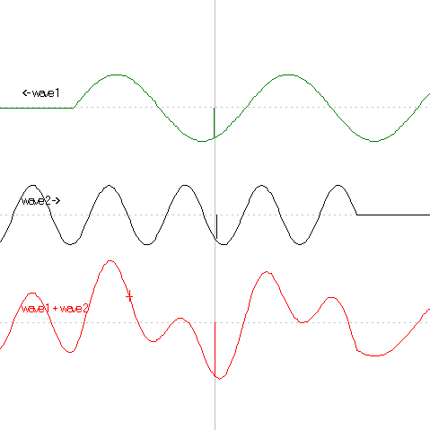

Interference between two waves passing each other.

Wave 1 comes from the right and wave 2 from the left. At the bottom, the interference pattern is displayed. The wavelength and amplitude of wave 2 can be changed, and the interference picture can be displayed in several ways.
Exercise 20:
What is wavelength and what is amplitude?
The cross on the red interference wave at the bottom represents an object attached to the string or whatever medium in which the wave is propagating.
What happens to the cross when the waves propagate?
In the middle of the picture, fluctuations y1 and y2 are shown for wave 1 and 2.
What can you say about the fluctuation of the effective wave?